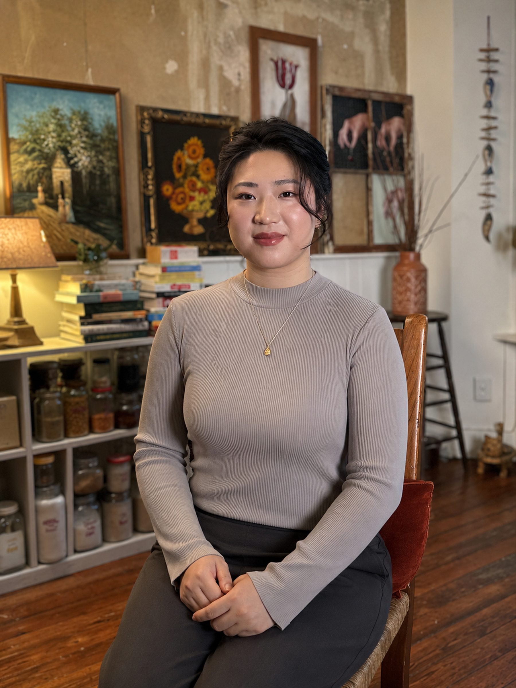

◌
Trauma & PTSD
For experiences that still live in the nervous system, relationships, and everyday patterns long after the original event has passed.
BILINGUAL · TRAUMA-INFORMED · RELATIONAL
I help people who look capable on the outside but feel overwhelmed, disconnected, or stuck inside reconnect with themselves and move toward a life that feels more alive.

THERAPY THAT MEETS YOU, RATHER THAN MANAGES YOU
I am a bilingual Licensed Mental Health Counselor who works with people who have learned to survive by staying highly functional, emotionally contained, guarded, or deeply attuned to others.
My work is integrative and collaborative. I pay attention not only to symptoms, but also to the survival strategies underneath them—how they formed, what they protected, and whether they still serve you now. As a 1.5-generation Chinese American therapist, I bring cultural understanding without reducing anyone’s experience to a stereotype.
02 / CLINICAL FOCUS
For experiences that still live in the nervous system, relationships, and everyday patterns long after the original event has passed.
A neurodivergence-affirming space for attention, activation, chronic overwhelm, self-criticism, and the pressure to appear “fine.”
For hypervigilance, perfectionism, stress, professional burnout, and the exhaustion of always anticipating what others need.
Support around life transitions, racial identity, peer and intimate relationships, boundaries, belonging, and reconnecting with your own wants.
03 / INSURANCE & EAP
Accepted insurance and EAP options include the plans below. Coverage, copays, deductibles, and authorization requirements vary by plan, so eligibility should be verified before the first session.
04 / HOW I WORK
Therapy is not only about understanding what happened. It is also about creating a different experience in the present: being met rather than evaluated, allowing the nervous system to settle, and giving difficult emotions enough safety to move and integrate.
05 / EDUCATION & CREDENTIALS
New York University · 2021–2022
Queens College
EMDR and CBT trained · AEDP Level 2 training in progress
“In the safety of our work, pain begins to move, movement gathers rhythm, and momentum becomes life.”— HARMONY GONG, LMHC-D, LPC
06 / INITIAL CONSULTATION
Use the scheduler below to book an initial consultation with Harmony Gong, LMHC-D, LPC.
07 / GET STARTED
If you are looking for bilingual, trauma-informed psychotherapy that makes room for both cultural context and individual complexity, reach out for an initial consultation. You can also contact Harmony directly with questions about fit, scheduling, or insurance.